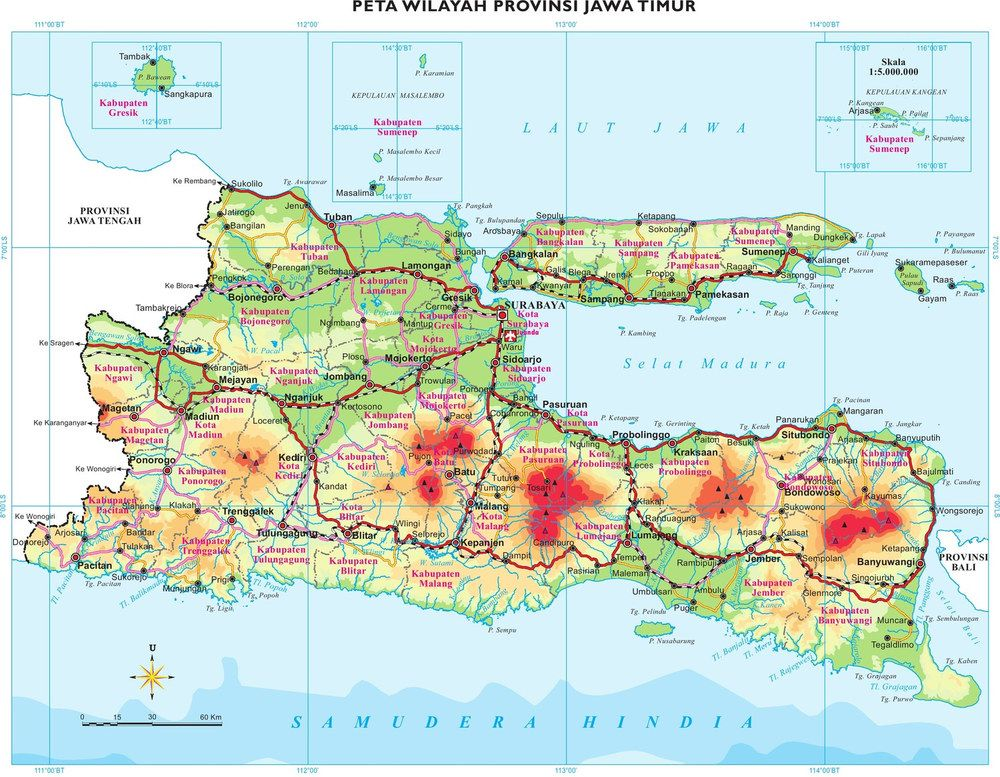

Jawa Timur (Jatim) adalah provinsi di bagian timur Pulau Jawa beribu kota Surabaya, yang dikenal sebagai pusat industri, perdagangan, dan budaya. Dengan luas 48.033 km², daerah berjuluk "Bumi Majapahit" ini memiliki 29 kabupaten dan 9 kota, serta populasi terbesar kedua di Indonesia, menjadikannya pusat pertumbuhan ekonomi yang strategis.

Jawa Timur memiliki wilayah terluas di antara enam provinsi di pulau Jawa, dan memiliki jumlah penduduk terbanyak kedua di Indonesia setelah Jawa Barat. Wilayah Provinsi Jawa Timur berbatasan dengan Laut Jawa di sebelah utara, Selat Bali (Provinsi Bali) di sebelah timur, Samudra Hindia di sebelah selatan, serta Provinsi Jawa Tengah di sebelah barat. Wilayah Provinsi Jawa Timur juga meliputi Pulau Madura, Pulau Bawean, Pulau Kangean, Kepulauan Kangean serta sejumlah pulau-pulau kecil di Laut Jawa yakni: Kepulauan Masalembu, Pulau Sempu dan Nusa Barung.